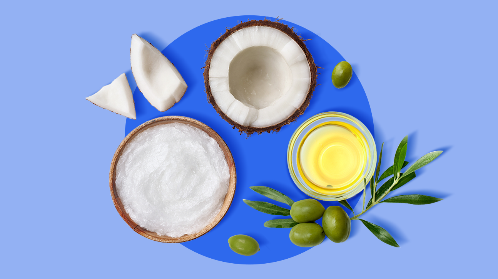
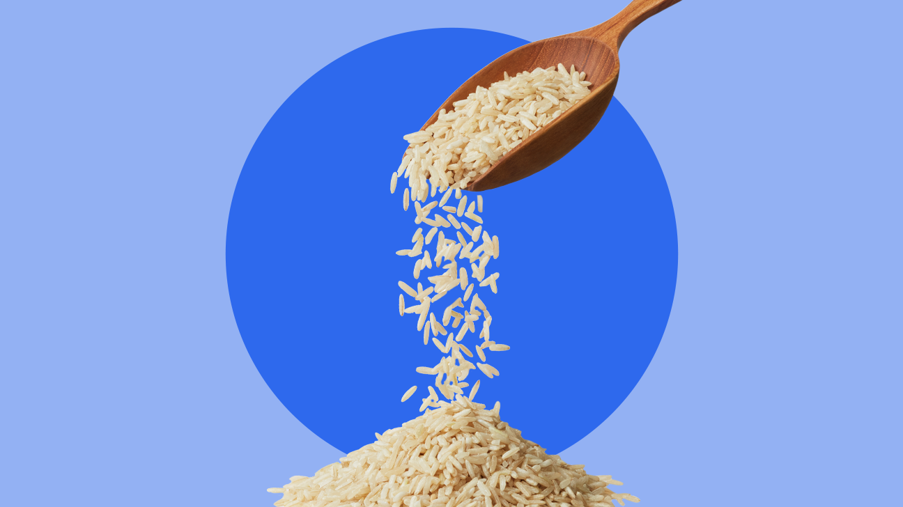

Most Nutritious Foods You Can Eat, According to an RD
Sometimes healthy eating can seem like a real uphill climb. What’s healthy? What’s not? How many creative ways can one try to spice up kale?
First, it’s a little more nuanced than only eating foods that are categorized as “healthy” — after all, the healthiest eating styles (for body and soul) allow you to enjoy your favorite eats without guilt.
Still, for optimal physical health, you’ll want to stick to mostly whole, unprocessed, or minimally processed foods. And, you’ll want a mix of veggies, protein, grains, fruits, and dairy throughout your day (more on that here).
To help you make the best choices to fill your plate, your heart, and your stomach, here are 102 of the most nutritious foods you can eat.
Fats and oils

It’s hard to cook a healthy meal without a good fat source, y’know?? These are the best of the best.
1. Olive oil
Olive oil is the OG of healthy oils, full of anti-inflammatory monounsaturated fats. In fact, olive oil gets lots of the cred for the healthfulness of the Mediterranean diet. Channel your inner Rachael Ray and go for that EVOO (extra virgin olive oil) for the most olive oil goodness.
How we use it: roasting veggies and making salad dressing.
2. Coconut oil
Coconut oil is kinda unique in the world of plant-based cooking oils. It’s rich in saturated fats and has a variety of uses, from cooking to beauty. For all the coconutty flavor and minimal processing, look for unrefined coconut oil.
How we use it: baking desserts.
3. Avocado oil
Like the avocadoes it comes from, avocado oil — similar to olive oil — is chock full of monounsaturated fats. It’s also got a great, nutty flavor and a super high smoke point — making it ideal for pan-frying your foods to a perfect crispness. (Psst, you’ve gotta try it with asparagus.)
How we use it: pan-frying meats and veggies.
4. Ghee
Ghee — which is widely used in Indian cuisine — is clarified butter, made by removing all of the milk solids from butter. This leaves you with 100 percent pure, clear fat that has an excellent buttery flavor. In Ayurvedic medicine, aged ghee is even considered a brain booster.
How we use it: frying eggs.
Grains

These whole grains are the whooooole package.
5. Oats
Oats are super versatile, and you can take them in the savory or sweet direction. They’re also a good addition to baked goods, and the secret ingredient to make meatloaf super moist. Oats are also rich in a soluble fiber called beta-glucan, which may offer some heart health benefits.
How we use it: to make overnight oats.
6. Quinoa
Quinoa (pronounced “keen-wah”) is a gluten-free grain that’s a bit higher in protein than other grains, making it an excellent addition to plant-based meals. It also contains a variety of vitamins and minerals, so we’re pretty keen — er, quin — on it.
How we use it: as an *elevated* rice substitute.
7. Barley
When we turned 30, this became our new favorite bar. Barley is a gluten-containing grain that has a distinct, mildly sweet taste. It’s heavily used in Korean cuisine to cook or to make barley tea, and it’s rich in fiber, vitamins and minerals, and some antioxidants too.
How we use it: to make cold grain salads.
8. Einkorn wheat
Einkorn is an ancient grain, and in fact, may have been used to make the very first loaves of bread… ever. It’s easier to digest than regular wheat, so some people who are gluten sensitive may be able to eat it (it’s not appropriate for people with Celiac disease though). It also contains zinc, iron, antioxidants, and a fair bit of protein.
How we use it: to make homemade sourdough bread.
9. Amaranth
Amaranth makes beautiful, dreamy flowers, but it’s also a gluten-free grain that provides fiber, protein, and minerals like magnesium and iron. It also has some anti-inflammatory properties. With its nutty flavor, it’s also a good stand-in for other grains like rice or quinoa.
How we use it: as the base of a grain bowl.
10. Sprouted bread
Sprouted bread (also widely known as Ezekiel bread, after a brand of sprouted bread) is made from grains that have been partially sprouted before processing. This adds a unique taste to the bread and makes some nutrients easier to absorb — so you get more of the good stuff.
How we use it: sandwiches (cause who doesn’t love a good sandwich??)
11. Popcorn
Q — what’s the healthiest snack that you can eat 4 cups of for only 120 calories? Answer: it’s popcorn! Popcorn is also a whole grain, and it’s a perfect vehicle for bold seasonings.
How we use it: for a movie-night snack with Parmesan and oregano (or just M&Ms 🙈).